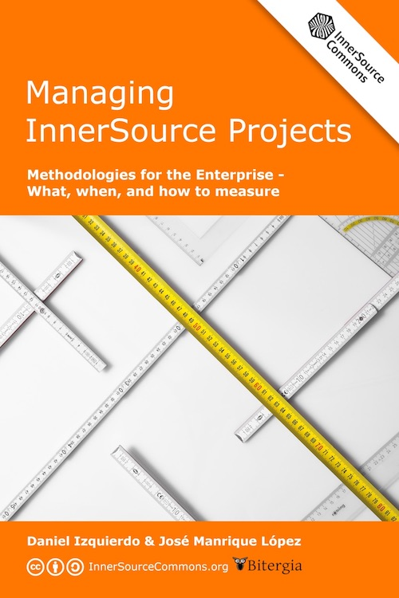

Managing InnerSource Projects book

What is this book about?
This book is intended to cover all aspects of managing an InnerSource Program at an organization. Pitching, starting, scaling, training, governance, infrastructure, metrics, motivation, and much more! If there is any explanation that you need in relation to your InnerSource Program, then this book is intended to have it.
How is the book structured?
This book is divided into sections and articles, each of which cover one single aspect of an InnerSource Program. Articles should be relatively short and self-contained so that they can be read in any order and any amount and still be useful. Detailed explanation of InnerSource topics should go in the InnerSource Patterns book and be linked from the article here. Think of the articles in this book like either a conversational introduction/summary to a pattern or possible a journey showing how multiple patterns can be used together in an InnerSource Program.
Who can contribute?
This book is a work in progress where anyone is more than welcome to contribute in any possible way. Ideas, comments, typos, full paragraphs or sections would be great. This repository aims at bringing specialized knowledge from the industry within this respect in a way that this is useful for third parties. For this, we are actively looking for reviewers that can help in this process. For those that have already contributed to the book, thanks a lot!
You can find more information about the process in our contributing section.
Who is fostering this initiative?
We thank Bitergia (especially José Manrique López and Daniel Izquierdo) for starting this book and seeding it with its main areas of expertise such as the usual metrics and KPI's to use, the methodology, the metrics strategy around your general InnerSource strategy and the infrastructure needed to have a successful InnerSource journey within a company.
The book is now managed by the ISPO Working Group. It is open for use and contribution by anyone interested in InnerSource. Come join us and contribute!
How Do We Structure Goals, Questions, and Metrics?
Review the Goal-Question-Metric Approach to further understand how we structure goals, questions, and metrics. Review GQM use cases and user journeys to guide their development.
We document goals, questions, and metrics in separate folders in the measuring directory. You can browse all goals, questions, and metrics in graph format.
Add in your own scenarios to the graph! See the "Metrics" section of CONTRIBUTING.md.
References
For further reading, we encourage you to participate in the InnerSource Commons, a non-profit foundation where dozens of companies are already sharing experiences and working to improve their craft of InnerSource.
Acknowledgements
Each chapter in the book is authored and reviewed by different people. That information can be found at the beginning of each chapter. This initiative is fostered by the ISPO Working Group. For further questions, please contact us in Slack!
The book cover was created by Sebastian Spier, using an image by user Bru-nO, available under the Pixabay License.
All of the content found in this repository is licensed CC BY-SA 4.0.